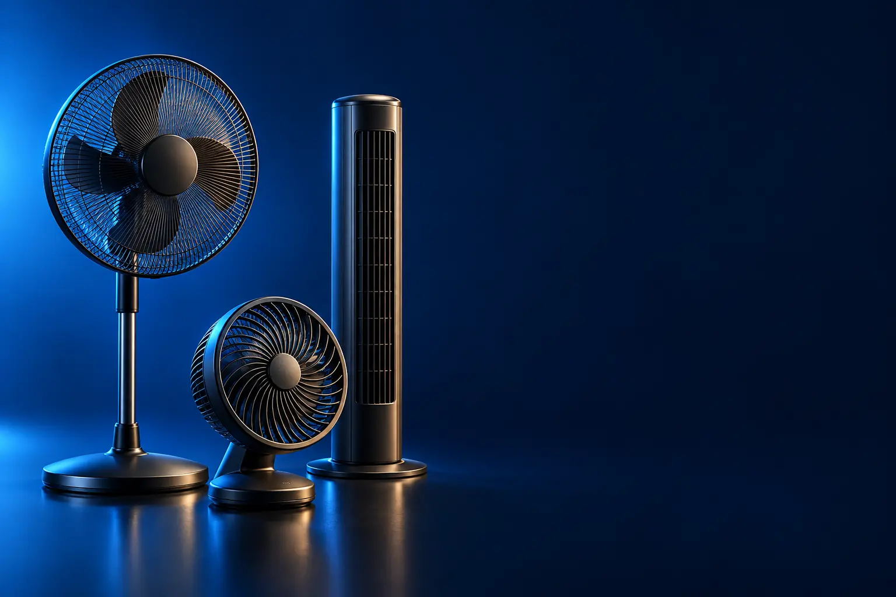

VENTILADOR DE MESA
Melhor ventilador de mesa custo-benefício
Para o quarto, a mesa de trabalho e ambientes pequenos.

Melhor custo-benefício em ventiladorMondial Super Power 30 cm (VSP-30-B)
CURADORIA TECHAPROVADO · 2026
Ventilador se escolhe pelo tamanho do cômodo e por onde ele vai ficar. Separamos 9 modelos em 3 perfis e dizemos para quem cada um vale a pena.

NOSSA LEITURA
30 cm para quartos pequenos; 40 cm para quartos e salas; 50 a 60 cm para ambientes grandes. Para dormir, procure modo noturno ou silencioso.
COMECE POR AQUI
VENTILADOR DE MESA
Para o quarto, a mesa de trabalho e ambientes pequenos.
VENTILADOR DE COLUNA
Altura ajustável para ventilar quem está sentado ou deitado.

VENTILADOR DE PAREDE
Não ocupa espaço no chão e ventila ambientes maiores.

A FICHA, TRADUZIDA
01 - HÉLICE
O diâmetro da hélice (30, 40, 50 ou 60 cm) define quanto ar o ventilador move. Mais pás deixam o vento mais contínuo e, em geral, mais silencioso.
30 cm: quarto pequeno e mesa. 40 cm: quarto e sala. 50 a 60 cm: salas grandes, varandas e comércios.
Potência em watts ajuda a comparar, mas o projeto da hélice e da grade pesa tanto quanto.
02 - RUÍDO
Ventiladores com modo noturno ou tecnologia silenciosa reduzem o barulho na velocidade baixa.
Para quarto, prefira modelos com mais pás e grade fechada. Para comércio, potência pesa mais que ruído.
Limpe a hélice e a grade: poeira aumenta o barulho e reduz o vento.
03 - INSTALAÇÃO
Mesa é portátil. Coluna tem altura regulável e ocupa pouco chão. Parede libera o espaço, mas precisa de furos e tomada próxima.
Modelos 2 em 1 funcionam na mesa e na parede.
Instale o de parede a cerca de 2 m de altura, inclinado para a área de uso.
04 - VOLTAGEM
Muitos ventiladores têm versões separadas por voltagem, cada uma com seu anúncio. Indicamos a voltagem de cada link quando o anúncio informa.
Ligar na voltagem errada pode queimar o motor.
Modelos bivolt funcionam nas duas tensões.
A CURADORIA EM DETALHE
9 modelos da pesquisa
PERFIL · 3 MODELOS, DA ENTRADA AO TOP DE LINHA
Os ventiladores de mesa de 30 a 40 cm resolvem quartos e ambientes pequenos. Quanto maior a hélice, mais ar e mais alcance; os melhores são mais silenciosos e têm modo noturno.
MESA · CUSTO-BENEFÍCIO 1 de 3
Melhor custo-benefício em ventilador
30 cm · 6 pás · oscilante · 110 V
Ver preço na AmazonPOR DENTRO DA ESCOLHA
Ventilador de mesa de 30 cm com 6 pás, baixo nível de ruído e oscilação contínua para espalhar o ar pelo ambiente.
Ventilador de mesa de 30 cm com 6 pás, baixo nível de ruído e oscilação contínua para espalhar o ar pelo quarto ou pela mesa de trabalho. Esta versão é 110 V.
| Hélice | 30 cm, 6 pás |
|---|---|
| Voltagem | 110 V |
| Oscilação | Sim |
Fonte: ficha e descrição do anúncio, conferidas em 02/11/2026. Dados informados pelo fabricante.

MESA · INTERMEDIÁRIO 2 de 3
40 cm · 140 W · 6 pás · 110 V
Ver preço na AmazonPOR DENTRO DA ESCOLHA
A versão de 40 cm e 140 W da linha Super Power, com 6 pás, baixo ruído e oscilação contínua.
A hélice de 40 cm empurra bem mais ar que a de 30 cm.
| Hélice | 40 cm, 6 pás |
|---|---|
| Potência | 140 W |
| Voltagem | 110 V |
Fonte: ficha e descrição do anúncio, conferidas em 02/11/2026. Dados informados pelo fabricante.

MESA · TOP DE LINHA 3 de 3
Top de linha de mesa
7 pás · 150 W · modo noturno · oscilação de 80°
Ver preço na AmazonPOR DENTRO DA ESCOLHA
Ventilador de 40 cm com 7 pás, 150 W, grade Chevron Zone e tecnologia Power Zone para mais alcance, 3 velocidades, modo noturno e oscilação de 80°.
O modo noturno e as 7 pás são o diferencial para dormir com o ventilador ligado.
| Hélice | 40 cm, 7 pás |
|---|---|
| Potência | 150 W |
| Extras | Modo noturno |
Fonte: ficha e descrição do anúncio, conferidas em 02/11/2026. Dados informados pelo fabricante.
PERFIL · 3 MODELOS, DA ENTRADA AO TOP DE LINHA
O ventilador de coluna tem altura regulável e ocupa pouco espaço no chão. É bom para sala e quarto, apontando o vento para o sofá ou a cama.
COLUNA · CUSTO-BENEFÍCIO 1 de 3
Melhor custo-benefício de coluna
40 cm · altura de 1,19 a 1,50 m · 110 V
Ver preço na AmazonPOR DENTRO DA ESCOLHA
Ventilador de coluna de 40 cm com 6 pás, altura regulável de 1,19 a 1,50 m, baixo ruído e oscilação contínua.
Vendido pela Amazon.
| Hélice | 40 cm, 6 pás |
|---|---|
| Altura | 1,19 a 1,50 m |
| Voltagem | 110 V |
Fonte: ficha e descrição do anúncio, conferidas em 02/11/2026. Dados informados pelo fabricante.

COLUNA · INTERMEDIÁRIO 2 de 3
Controle remoto · painel touch · auto desligamento
Ver preço na AmazonPOR DENTRO DA ESCOLHA
Ventilador de coluna de 140 W com painel touch, controle remoto, desligamento automático programável, hélice de 6 pás e grade TS para máxima vazão e mínimo ruído.
O controle remoto e o timer são o degrau sobre o Mondial.
| Potência | 140 W |
|---|---|
| Controle | Remoto e painel touch |
| Timer | Sim |
Fonte: ficha e descrição do anúncio, conferidas em 02/11/2026. Dados informados pelo fabricante.

COLUNA · TOP DE LINHA 3 de 3
Top de linha de coluna
Controle pelo app · ultra silencioso · 126 W
Ver preço na AmazonPOR DENTRO DA ESCOLHA
O primeiro ventilador com Bluetooth, segundo a Arno: controle todas as funções pelo app do celular, 6 pás com tecnologia Ultra Silence, 126 W e 3 velocidades.
Silêncio é o ponto forte: bom para dormir.
| Potência | 126 W |
|---|---|
| Controle | App via Bluetooth |
| Ruído | Ultra Silence |
Fonte: ficha e descrição do anúncio, conferidas em 02/11/2026. Dados informados pelo fabricante.
PERFIL · 3 MODELOS, DA ENTRADA AO TOP DE LINHA
Os ventiladores de parede liberam o chão e, com hélices de 50 a 60 cm, ventilam salas, cozinhas e comércios. Precisam de instalação na parede e, de preferência, tomada próxima.
PAREDE · CUSTO-BENEFÍCIO 1 de 3
Melhor custo-benefício de parede
50 cm · 8 pás · 180 W · Procel A
Ver preço na AmazonPOR DENTRO DA ESCOLHA
Ventilador 2 em 1 (mesa ou parede) de 50 cm, 8 pás e 180 W, com tecnologia Silent Flow (menos ruído na velocidade 1) e selo Procel de eficiência.
A hélice de 50 cm por preço de ventilador de 40.
| Hélice | 50 cm, 8 pás |
|---|---|
| Potência | 180 W |
| Instalação | Mesa ou parede |
Fonte: ficha e descrição do anúncio, conferidas em 02/11/2026. Dados informados pelo fabricante.

PAREDE · INTERMEDIÁRIO 2 de 3
60 cm · 3 pás · oscilante · 220 V
Ver preço na AmazonPOR DENTRO DA ESCOLHA
Ventilador de parede de 60 cm com 3 pás, regulagem de inclinação, oscilação horizontal automática e pintura eletrostática resistente à corrosão.
60 cm alcançam ambientes que um ventilador de 50 não cobre.
| Hélice | 60 cm, 3 pás |
|---|---|
| Voltagem | 220 V |
| Oscilação | Sim |
Fonte: ficha e descrição do anúncio, conferidas em 02/11/2026. Dados informados pelo fabricante.

PAREDE · TOP DE LINHA 3 de 3
Top de linha de parede
60 cm · controle remoto · bivolt · 135 W
Ver preço na AmazonPOR DENTRO DA ESCOLHA
Ventilador de parede profissional de 60 cm, 5 pás, 135 W, 3 velocidades, oscilação, controle remoto e bivolt.
Controle remoto e bivolt: instala em qualquer tomada e liga sem escada.
| Hélice | 60 cm, 5 pás |
|---|---|
| Voltagem | Bivolt |
| Controle | Remoto |
Fonte: ficha e descrição do anúncio, conferidas em 02/11/2026. Dados informados pelo fabricante.
Nenhum modelo encontrado. Tente outro termo ou volte para Todos.
LADO A LADO
| Modelo | Perfil | Posição | Hélice | Destaque |
|---|---|---|---|---|
| Mondial Super Power 30 cm (VSP-30-B) | Mesa | Custo-benefício | 30 cm, 6 pás | 30 cm · 6 pás · oscilante · 110 V |
| Mondial Super Power 40 cm (VSP-40-B) | Mesa | Intermediário | 40 cm, 6 pás | 40 cm · 140 W · 6 pás · 110 V |
| Arno X-TREME 7 40 cm (VE71) | Mesa | Top de linha | 40 cm, 7 pás | 7 pás · 150 W · modo noturno · oscilação de 80° |
| Mondial Coluna Super Power 40 cm (VSP-40C-B) | Coluna | Custo-benefício | 40 cm, 6 pás | 40 cm · altura de 1,19 a 1,50 m · 110 V |
| Mallory Chronos 140 W | Coluna | Intermediário | Controle remoto · painel touch · auto desligamento | |
| Arno Ultra Silence Force Bluetooth (VDBT) | Coluna | Top de linha | Controle pelo app · ultra silencioso · 126 W | |
| WAP FLOW TURBO 50 cm (mesa e parede) | Parede | Custo-benefício | 50 cm, 8 pás | 50 cm · 8 pás · 180 W · Procel A |
| Ventisol New 60 cm | Parede | Intermediário | 60 cm, 3 pás | 60 cm · 3 pás · oscilante · 220 V |
| WAP RAJADA PRO 60 | Parede | Top de linha | 60 cm, 5 pás | 60 cm · controle remoto · bivolt · 135 W |
CONSIDERAÇÕES FINAIS
Ventiladores custam pouco e têm preços próximos, por isso cada perfil tem três degraus. O Honeywell TurboForce ficou de fora por ser importado pela Amazon Global.
O Mondial Super Power 30 cm para quarto, e o Mondial de coluna 40 cm para sala.
O Arno Ultra Silence Force e o Arno X-TREME 7 com modo noturno.
30 cm para quartos pequenos; 40 cm para quartos maiores e salas.
Para salas grandes e comércio, sim: libera o chão e ventila mais.
Porque ele muda várias vezes por dia. O botão leva ao valor atualizado na loja.
TRANSPARÊNCIA EDITORIAL
Separamos os ventiladores pelo tipo de instalação e montamos uma escada de preço em cada perfil. Cada modelo precisa responder com clareza "para quem ele é o certo".
Em cada perfil há modelos em faixas de preço diferentes, e cada degrau precisa entregar algo que o anterior não entrega. Dois modelos com a mesma proposta não entram juntos.
Ficha e especificações foram conferidas nos anúncios das lojas em 02/11/2026.
Os links de compra desta página são de afiliado: se você comprar por eles, o TechAprovado pode ganhar uma comissão, sem custo adicional para você. Isso não muda a ordem nem a escolha dos produtos.
📲 GUIAS E DICAS NO SEU FEED
Dicas práticas antes de comprar, em carrosséis e vídeos curtos, sempre com link para o guia completo.